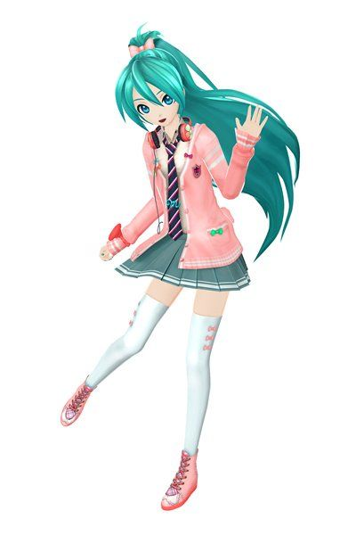

Hello! This website is dedicated to preserve all custom charts from Project Diva F/F2nd before servers are shut down. This is quite an ambitious project and won't be complete for a while. For now I only have a handful of F2nd charts, only available with a japenese copy of the game.
There are two types of charts. Encrypted and decrypted. Encrypted works for real hardware, decrypted works for an emulator (RPCS3). As of right now I only have encrypted charts available, as to decrypt them you need a 64-bit PC. If you would like to play on an emulator, refer to the tutorial down below. As for the charts, they have a special way of loading. They each take up a slot on the custom chart list, so you MUST download one of the packs and you cannot add your own charts unless you have expierience with this. So before importing any songs, read the song list and decide which pack you want.
If you have chosen a decrypted song pack, skip the video. If not please watch the video below on how to decrypt an encrypted song pack. Once you have your decrypted songs, you must put the songs from the Music folder into RPCS3\dev_hdd0\music on your pc. If that folder does not exist just make it. Then put all of the individual song folders in the folder named RPCS3\dev_hdd0\home\00000001\savedata. After these steps it should work.